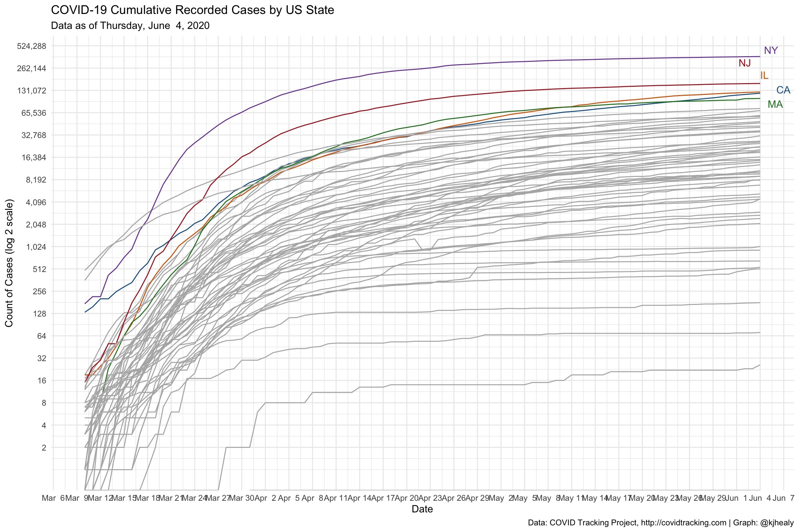
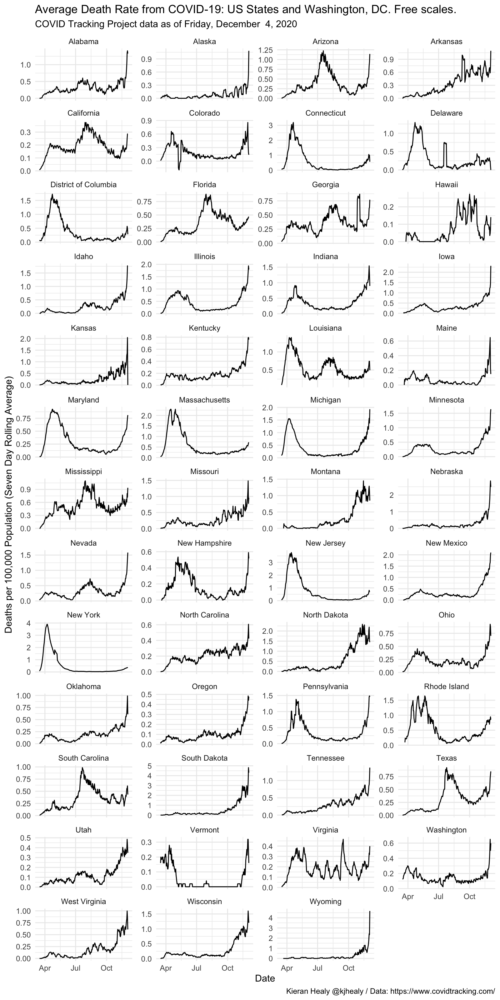
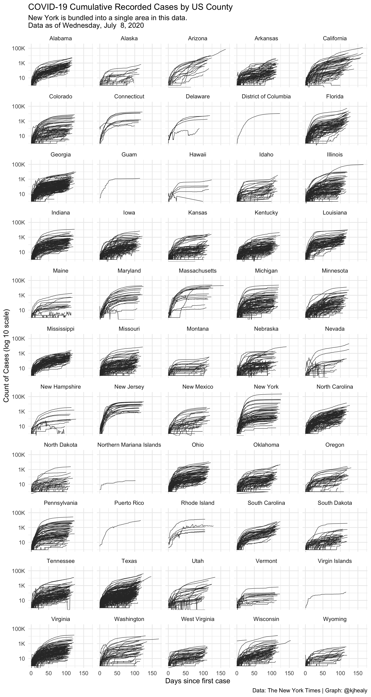
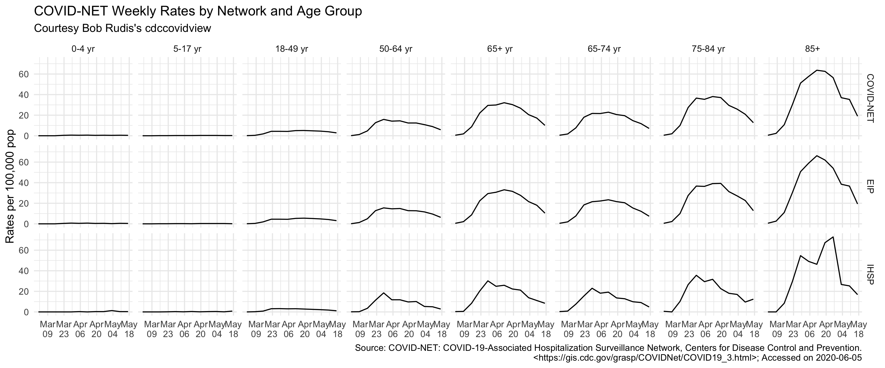

library(tidyverse) #> ── Attaching packages ─────────────────────────────────────── tidyverse 1.3.0 ── #> ✔ ggplot2 3.3.2 ✔ purrr 0.3.4 #> ✔ tibble 3.0.3 ✔ dplyr 1.0.0 #> ✔ tidyr 1.1.0 ✔ stringr 1.4.0 #> ✔ readr 1.3.1 ✔ forcats 0.5.0 #> ── Conflicts ────────────────────────────────────────── tidyverse_conflicts() ── #> ✖ dplyr::filter() masks stats::filter() #> ✖ dplyr::lag() masks stats::lag() library(covdata) #> #> Attaching package: 'covdata' #> The following object is masked from 'package:datasets': #> #> uspop library(ggrepel)
Data for the United States come from a variety of sources:
covus #> # A tibble: 129,761 x 7 #> date state fips data_quality_gra… measure count measure_label #> <date> <chr> <chr> <chr> <chr> <dbl> <chr> #> 1 2020-07-19 AK 02 A positive 2277 Positive Tests #> 2 2020-07-19 AK 02 A negative 170733 Negative Tests #> 3 2020-07-19 AK 02 A pending NA Pending Tests #> 4 2020-07-19 AK 02 A hospitalize… 27 Currently Hospi… #> 5 2020-07-19 AK 02 A hospitalize… NA Cumulative Hosp… #> 6 2020-07-19 AK 02 A in_icu_curr… NA Currently in ICU #> 7 2020-07-19 AK 02 A in_icu_cumu… NA Cumulative in I… #> 8 2020-07-19 AK 02 A on_ventilat… 1 Currently on Ve… #> 9 2020-07-19 AK 02 A on_ventilat… NA Cumulative on V… #> 10 2020-07-19 AK 02 A recovered 712 Recovered #> # … with 129,751 more rows
## Which n states are leading the count of positive cases or deaths? top_n_states <- function(data, n = 5, measure = c("positive", "death")) { meas <- match.arg(measure) data %>% group_by(state) %>% filter(measure == meas, date == max(date)) %>% drop_na() %>% ungroup() %>% top_n(n, wt = count) %>% pull(state) } state_cols <- c("gray70", "#195F90FF", "#D76500FF", "#238023FF", "#AB1F20FF", "#7747A3FF", "#70453CFF", "#D73EA8FF", "#666666FF", "#96971BFF", "#1298A6FF", "#6F9BD6FF", "#FF952DFF", "#66CF51FF", "#FF4945FF", "#A07DBAFF", "#AC7368FF", "#EF69A2FF", "#9F9F9FFF", "#CACA56FF", "#61C3D5FF") covus %>% group_by(state) %>% mutate(core = case_when(state %nin% top_n_states(covus) ~ "", TRUE ~ state), end_label = ifelse(date == max(date), core, NA)) %>% arrange(date) %>% filter(measure == "positive", date > "2020-03-09") %>% ggplot(aes(x = date, y = count, group = state, color = core, label = end_label)) + geom_line(size = 0.5) + geom_text_repel(segment.color = NA, nudge_x = 0.2, nudge_y = 0.1) + scale_color_manual(values = state_cols) + scale_x_date(date_breaks = "1 week", date_labels = "%b %e" ) + scale_y_continuous(trans = "log2", labels = scales::comma_format(accuracy = 1), breaks = 2^c(seq(1, 19, 1))) + guides(color = FALSE) + labs(title = "COVID-19 Cumulative Recorded Cases by US State", subtitle = paste("Data as of", format(max(covus$date), "%A, %B %e, %Y")), x = "Date", y = "Count of Cases (log 2 scale)", caption = "Data: COVID Tracking Project, http://covidtracking.com | Graph: @kjhealy") + theme_minimal() #> Warning: Transformation introduced infinite values in continuous y-axis #> Warning: Transformation introduced infinite values in continuous y-axis #> Warning: Removed 15 row(s) containing missing values (geom_path). #> Warning: Removed 7304 rows containing missing values (geom_text_repel).

The COVID Tracking Project reports cumulative counts for key measures such as positive tests and deaths. For example, for New York State:
measures <- c("positive", "negative", "death") covus %>% filter(measure %in% measures, state == "NY") %>% select(date, state, measure, count) %>% pivot_wider(names_from = measure, values_from = count) #> # A tibble: 138 x 5 #> date state positive negative death #> <date> <chr> <dbl> <dbl> <dbl> #> 1 2020-07-19 NY 406807 4708663 25048 #> 2 2020-07-18 NY 406305 4662961 25035 #> 3 2020-07-17 NY 405551 4593898 25024 #> 4 2020-07-16 NY 404775 4516435 25014 #> 5 2020-07-15 NY 404006 4444519 25003 #> 6 2020-07-14 NY 403175 4381752 24994 #> 7 2020-07-13 NY 402263 4322619 24989 #> 8 2020-07-12 NY 401706 4271489 24979 #> 9 2020-07-11 NY 401029 4209748 24974 #> 10 2020-07-10 NY 400299 4141275 24968 #> # … with 128 more rows
To calculate daily counts from these cumulative measures, use lag().
covus %>% filter(measure %in% measures, state == "NY") %>% select(date, state, measure, count) %>% pivot_wider(names_from = measure, values_from = count) %>% mutate(across(positive:death, ~.x - lag(.x, order_by = date), .names = "daily_{col}")) #> # A tibble: 138 x 8 #> date state positive negative death daily_positive daily_negative #> <date> <chr> <dbl> <dbl> <dbl> <dbl> <dbl> #> 1 2020-07-19 NY 406807 4708663 25048 502 45702 #> 2 2020-07-18 NY 406305 4662961 25035 754 69063 #> 3 2020-07-17 NY 405551 4593898 25024 776 77463 #> 4 2020-07-16 NY 404775 4516435 25014 769 71916 #> 5 2020-07-15 NY 404006 4444519 25003 831 62767 #> 6 2020-07-14 NY 403175 4381752 24994 912 59133 #> 7 2020-07-13 NY 402263 4322619 24989 557 51130 #> 8 2020-07-12 NY 401706 4271489 24979 677 61741 #> 9 2020-07-11 NY 401029 4209748 24974 730 68473 #> 10 2020-07-10 NY 400299 4141275 24968 786 72772 #> # … with 128 more rows, and 1 more variable: daily_death <dbl>
state_pops <- uspop %>% filter(sex_id == "totsex", hisp_id == "tothisp") %>% select(state_abbr, statefips, pop, state) %>% rename(name = state, state = state_abbr, fips = statefips) %>% mutate(state = replace(state, fips == "11", "DC")) ## Using a convenience function to do something similar ## to the lambda version above get_daily_count <- function(count, date){ count - lag(count, order_by = date) } covus %>% filter(measure == "death", state %in% unique(state_pops$state)) %>% group_by(state) %>% mutate( deaths_daily = get_daily_count(count, date), deaths7 = slider::slide_dbl(deaths_daily, mean, .before = 7, .after = 0, na.rm = TRUE)) %>% left_join(state_pops) %>% filter(date > lubridate::ymd("2020-03-15")) %>% ggplot(mapping = aes(x = date, y = (deaths7/pop)*1e5)) + geom_line(size = 0.5) + scale_y_continuous(labels = scales::comma_format(accuracy = 1)) + facet_wrap(~ name, ncol = 4) + labs(x = "Date", y = "Deaths per 100,000 Population (Seven Day Rolling Average)", title = "Average Death Rate from COVID-19: US States and Washington, DC", subtitle = paste("COVID Tracking Project data as of", format(max(covnat$date), "%A, %B %e, %Y")), caption = "Kieran Healy @kjhealy / Data: https://www.covidtracking.com/") + theme_minimal() #> Joining, by = c("state", "fips")

covus %>% filter(measure == "death", state %in% unique(state_pops$state)) %>% group_by(state) %>% mutate( deaths_daily = get_daily_count(count, date), deaths7 = slider::slide_dbl(deaths_daily, mean, .before = 7, .after = 0, na.rm = TRUE)) %>% left_join(state_pops) %>% filter(date > lubridate::ymd("2020-03-15")) %>% ggplot(mapping = aes(x = date, y = (deaths7/pop)*1e5)) + geom_line(size = 0.5) + facet_wrap(~ name, ncol = 4, scales = "free_y") + labs(x = "Date", y = "Deaths per 100,000 Population (Seven Day Rolling Average)", title = "Average Death Rate from COVID-19: US States and Washington, DC. Free scales.", subtitle = paste("COVID Tracking Project data as of", format(max(covnat$date), "%A, %B %e, %Y")), caption = "Kieran Healy @kjhealy / Data: https://www.covidtracking.com/") + theme_minimal() #> Joining, by = c("state", "fips")

covus %>% filter(measure == "death") %>% group_by(date) %>% summarize(count = sum(count, na.rm = TRUE)) %>% ggplot(aes(x = date, y = count)) + geom_line(size = 0.75) + scale_x_date(date_breaks = "2 weeks", date_labels = "%b %e" ) + scale_y_continuous(labels = scales::comma, breaks = seq(0, 160000, 20000)) + labs(title = "COVID-19 Cumulative Recorded Deaths in the United States", subtitle = paste("Data as of", format(max(covus$date), "%A, %B %e, %Y"), "Recorded counts underestimate total mortality."), x = "Date", y = "Count of Deaths", caption = "Data: COVID Tracking Project, http://covidtracking.com | Graph: @kjhealy") + theme_minimal() #> `summarise()` ungrouping output (override with `.groups` argument)

nytcovstate #> # A tibble: 7,659 x 5 #> date state fips cases deaths #> <date> <chr> <chr> <dbl> <dbl> #> 1 2020-01-21 Washington 53 1 0 #> 2 2020-01-22 Washington 53 1 0 #> 3 2020-01-23 Washington 53 1 0 #> 4 2020-01-24 Illinois 17 1 0 #> 5 2020-01-24 Washington 53 1 0 #> 6 2020-01-25 California 06 1 0 #> 7 2020-01-25 Illinois 17 1 0 #> 8 2020-01-25 Washington 53 1 0 #> 9 2020-01-26 Arizona 04 1 0 #> 10 2020-01-26 California 06 2 0 #> # … with 7,649 more rows
nytcovcounty #> # A tibble: 350,365 x 6 #> date county state fips cases deaths #> <date> <chr> <chr> <chr> <dbl> <dbl> #> 1 2020-01-21 Snohomish Washington 53061 1 0 #> 2 2020-01-22 Snohomish Washington 53061 1 0 #> 3 2020-01-23 Snohomish Washington 53061 1 0 #> 4 2020-01-24 Cook Illinois 17031 1 0 #> 5 2020-01-24 Snohomish Washington 53061 1 0 #> 6 2020-01-25 Orange California 06059 1 0 #> 7 2020-01-25 Cook Illinois 17031 1 0 #> 8 2020-01-25 Snohomish Washington 53061 1 0 #> 9 2020-01-26 Maricopa Arizona 04013 1 0 #> 10 2020-01-26 Los Angeles California 06037 1 0 #> # … with 350,355 more rows
nytcovcounty %>% mutate(uniq_name = paste(county, state)) %>% # Can't use FIPS because of how the NYT bundled cities group_by(uniq_name) %>% mutate(days_elapsed = date - min(date)) %>% ggplot(aes(x = days_elapsed, y = cases, group = uniq_name)) + geom_line(size = 0.25, color = "gray20") + scale_y_log10(labels = scales::label_number_si()) + guides(color = FALSE) + facet_wrap(~ state, ncol = 5) + labs(title = "COVID-19 Cumulative Recorded Cases by US County", subtitle = paste("New York is bundled into a single area in this data.\nData as of", format(max(nytcovcounty$date), "%A, %B %e, %Y")), x = "Days since first case", y = "Count of Cases (log 10 scale)", caption = "Data: The New York Times | Graph: @kjhealy") + theme_minimal() #> Don't know how to automatically pick scale for object of type difftime. Defaulting to continuous. #> Warning: Transformation introduced infinite values in continuous y-axis

This US Centers for Disase Control surveillance network conducts population-based surveillance for laboratory-confirmed COVID-19-associated hospitalizations in children (persons younger than 18 years) and adults in the United States. The current network covers nearly 100 counties in the 10 Emerging Infections Program (EIP) states (CA, CO, CT, GA, MD, MN, NM, NY, OR, and TN) and four additional states through the Influenza Hospitalization Surveillance Project (IA, MI, OH, and UT). The network represents approximately 10% of US population (~32 million people). Cases are identified by reviewing hospital, laboratory, and admission databases and infection control logs for patients hospitalized with a documented positive SARS-CoV-2 test. Data gathered are used to estimate age-specific hospitalization rates on a weekly basis and describe characteristics of persons hospitalized with COVID-19. Laboratory confirmation is dependent on clinician-ordered SARS-CoV-2 testing. Therefore, the unadjusted rates provided are likely to be underestimated as COVID-19-associated hospitalizations can be missed due to test availability and provider or facility testing practices. COVID-NET hospitalization data are preliminary and subject to change as more data become available. All incidence rates are unadjusted. Please use the following citation when referencing these data: “COVID-NET: COVID-19-Associated Hospitalization Surveillance Network, Centers for Disease Control and Prevention. WEBSITE. Accessed on DATE”.
Thanks to Bob Rudis’s cdccovidview package for making these data tractable to include.
cdc_hospitalizations #> # A tibble: 4,590 x 8 #> catchment network year mmwr_year mmwr_week age_category cumulative_rate #> <chr> <chr> <chr> <chr> <chr> <chr> <dbl> #> 1 Entire N… COVID-… 2020 2020 10 0-4 yr 0 #> 2 Entire N… COVID-… 2020 2020 11 0-4 yr 0 #> 3 Entire N… COVID-… 2020 2020 12 0-4 yr 0 #> 4 Entire N… COVID-… 2020 2020 13 0-4 yr 0.4 #> 5 Entire N… COVID-… 2020 2020 14 0-4 yr 0.9 #> 6 Entire N… COVID-… 2020 2020 15 0-4 yr 1.4 #> 7 Entire N… COVID-… 2020 2020 16 0-4 yr 2.1 #> 8 Entire N… COVID-… 2020 2020 17 0-4 yr 2.5 #> 9 Entire N… COVID-… 2020 2020 18 0-4 yr 3.1 #> 10 Entire N… COVID-… 2020 2020 19 0-4 yr 3.6 #> # … with 4,580 more rows, and 1 more variable: weekly_rate <dbl> cdc_catchments #> # A tibble: 17 x 2 #> name area #> * <chr> <chr> #> 1 COVID-NET Entire Network #> 2 EIP California #> 3 EIP Colorado #> 4 EIP Connecticut #> 5 EIP Entire Network #> 6 EIP Georgia #> 7 EIP Maryland #> 8 EIP Minnesota #> 9 EIP New Mexico #> 10 EIP New York #> 11 EIP Oregon #> 12 EIP Tennessee #> 13 IHSP Entire Network #> 14 IHSP Iowa #> 15 IHSP Michigan #> 16 IHSP Ohio #> 17 IHSP Utah cdc_deaths_by_state #> # A tibble: 53 x 10 #> data_as_of state start_week end_week covid_deaths total_deaths #> <date> <chr> <date> <date> <int> <int> #> 1 2020-04-30 Alab… 2020-02-01 2020-04-25 153 12427 #> 2 2020-04-30 Alas… 2020-02-01 2020-04-25 NA 856 #> 3 2020-04-30 Ariz… 2020-02-01 2020-04-25 194 15859 #> 4 2020-04-30 Arka… 2020-02-01 2020-04-25 26 7774 #> 5 2020-04-30 Cali… 2020-02-01 2020-04-25 1111 69341 #> 6 2020-04-30 Colo… 2020-02-01 2020-04-25 511 10721 #> 7 2020-04-30 Conn… 2020-02-01 2020-04-25 16 1277 #> 8 2020-04-30 Dela… 2020-02-01 2020-04-25 53 2034 #> 9 2020-04-30 Dist… 2020-02-01 2020-04-25 58 1452 #> 10 2020-04-30 Flor… 2020-02-01 2020-04-25 784 54148 #> # … with 43 more rows, and 4 more variables: percent_expected_deaths <dbl>, #> # pneumonia_deaths <int>, pneumonia_and_covid_deaths <int>, #> # all_influenza_deaths_j09_j11 <int> nssp_covid_er_reg #> # A tibble: 538 x 9 #> week num_fac total_ed_visits visits pct_visits visit_type region source #> <int> <int> <chr> <int> <dbl> <chr> <chr> <chr> #> 1 41 202 130377 814 0.006 ili Regio… Emerg… #> 2 42 202 132385 912 0.00700 ili Regio… Emerg… #> 3 43 202 131866 883 0.00700 ili Regio… Emerg… #> 4 44 203 128256 888 0.00700 ili Regio… Emerg… #> 5 45 203 127466 979 0.008 ili Regio… Emerg… #> 6 46 202 125306 1188 0.009 ili Regio… Emerg… #> 7 47 202 128877 1235 0.01 ili Regio… Emerg… #> 8 48 202 124781 1451 0.012 ili Regio… Emerg… #> 9 49 202 125939 1362 0.011 ili Regio… Emerg… #> 10 50 202 130430 1405 0.011 ili Regio… Emerg… #> # … with 528 more rows, and 1 more variable: year <int>
age_f <- c( "0-4 yr", "5-17 yr", "18-49 yr", "50-64 yr", "65+ yr", "65-74 yr", "75-84 yr", "85+") cdc_hospitalizations %>% mutate(start = mmwr_week_to_date(mmwr_year, mmwr_week)) %>% filter(!is.na(weekly_rate)) %>% filter(catchment == "Entire Network") %>% select(start, network, age_category, weekly_rate) %>% filter(age_category != "Overall") %>% mutate(age_category = factor(age_category, levels = age_f)) %>% ggplot() + geom_line(aes(start, weekly_rate)) + scale_x_date( date_breaks = "8 weeks", date_labels = "%b\n%d" ) + facet_grid(network ~ age_category) + labs(x = NULL, y = "Rates per 100,000 pop", title = "COVID-NET Weekly Rates by Network and Age Group", subtitle = "Courtesy Bob Rudis's cdccovidview", caption = sprintf("Source: COVID-NET: COVID-19-Associated Hospitalization Surveillance Network, Centers for Disease Control and Prevention.\n<https://gis.cdc.gov/grasp/COVIDNet/COVID19_3.html>; Accessed on %s", Sys.Date())) + theme_minimal()
